Antés de entrar de lleno a la solución de cors, vamos a provocar el error de cors.
Seguiremos trabajando con la Api que hemos estando creando en las secciones anteriores.
Lo que haremos es crear un frontend para poner a prueba nuestra api desde una página web.
Crearemos una carpeta nueva llamada web y dentro un archivo index.html
Nuestra estructura quedará así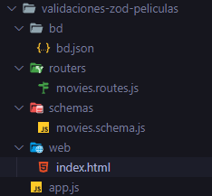
index.html
Hacemos la petición a nuestra Api que se levanta en el puerto 3000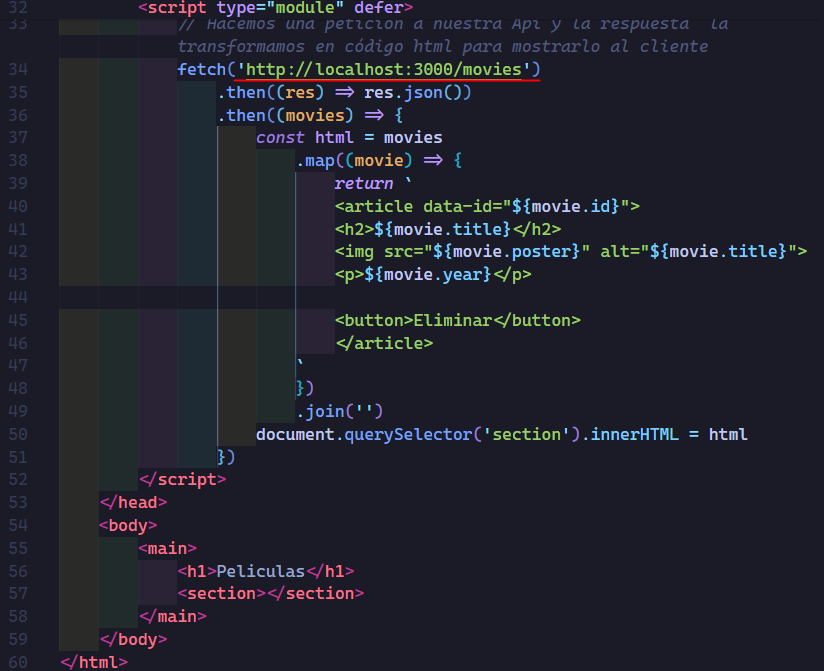
Para poder correr nuestro frontend podemos ocupar el servicio de servor que nos proporciona un entorno local de nuestro frontend en el puerto 8080.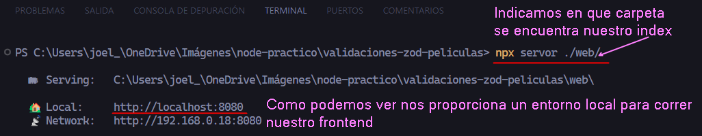
Accedemos al entorno que nos da servor
Como podemos ver no podemos ver nada en nuestra página.
Si inspeccionamos nuestra pagina y checamos la pestaña de network podemos ver el famoso error de cors.
Observamos el error de cors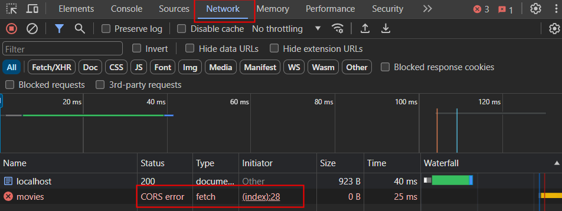
¿Qué es el error de CORS?
El error de CORS, que significa Cross-Origin Resource Sharing (Compartir recursos entre diferentes orígenes), ocurre cuando un script de una página web trata de hacer una solicitud a un recurso (como datos, imágenes, etc.) ubicado en otro dominio diferente al de la propia página web. CORS es un mecanismo de seguridad implementado por los navegadores web para proteger la seguridad de los usuarios y evitar que un sitio malicioso acceda a recursos de otros sitios sin permiso.
El error de CORS SOLO OCURRE EN LOS NAVEGADORES
Conceptos clave para entender el error de CORS:
Origen: En el contexto de CORS, un "origen" se refiere a la combinación de protocolo, dominio y puerto de un recurso web. Por ejemplo, el origen de
"https://www.ejemplo.com" es "https://www.ejemplo.com". Si una solicitud se hace desde un origen diferente al del recurso solicitado, CORS puede entrar en juego.
Política de mismo origen (Same-Origin Policy): Esta política es un principio de seguridad que impide que un script en una página web acceda a recursos de otro origen. Sin embargo, CORS es una forma de relajar esta política bajo ciertas condiciones controladas.
Solicitud de origen cruzado (Cross-Origin Request): Es una solicitud HTTP realizada por un script de una página web hacia un origen diferente al de la página actual.
El error de CORS se origina cuando el servidor al que se hace la solicitud no incluye las cabeceras CORS adecuadas en su respuesta. Estas cabeceras CORS son utilizadas por el servidor para informar al navegador si es seguro permitir que el script de la página web que realiza la solicitud acceda al recurso solicitado desde un origen diferente.
Solución de CORS teórica
PRIMER SOLUCIÓN
Una solución es configurar el servidor para permitir solicitudes CORS, si tenemos control sobre el servidor al que estamos haciendo las solicitudes, podemos configurarlo para que envíe las cabeceras CORS adecuadas en sus respuestas HTTP. Esto se puede hacer agregando las cabeceras Access-Control-Allow-Origin, Access-Control-Allow-Methods, Access-Control-Allow-Headers, etc., con los valores apropiados. Por ejemplo:
Access-Control-Allow-Origin: *
Para la cabecera Access-Control-Allow-Origin al poner (*) estamos indicando que le damos acceso a nuestro servidor o Api desde cualquier origen, poner (*) es lo más comun y más fácil, pero no siempre queremos darle acceso a cualquier origen si no a unos cuantos especificos.
Podemos especificarle explícitamente los origenes.
Access-Control-Allow-Origin: podemos poner por ejemplo el origen del cual ya sabemos que nos pediran recursos en nuestro servidor.
Por ejemplo:
http://localhost:1234 o 'https://movies.com' o cualquier otro origen que ya sabemos que nos pediran recursos, de esta manera podemos brindar más seguridad a nuestros recursos.
Access-Control-Allow-Methods: GET, POST, OPTIONS
Access-Control-Allow-Headers: Content-Type
Esto permitirá solicitudes CORS desde cualquier origen (*), con los métodos especificados (en este caso, GET, POST y OPTIONS) y los encabezados permitidos (en este caso, solo el encabezado Content-Type).
SEGUNDA SOLUCIÓN
Utilizar bibliotecas o herramientas que manejen CORS automáticamente: Algunas bibliotecas y herramientas en el lado del cliente, como Axios en JavaScript, tienen capacidades integradas para manejar solicitudes CORS automáticamente. Puedes usar estas bibliotecas para realizar tus solicitudes y evitar tener que lidiar con el error de CORS manualmente.
Solución de CORS práctica
Ya sabemos que el error de CORS se origina cuando el servidor al que se hace la solicitud no incluye las cabeceras CORS adecuadas en su respuesta.
Entonces procederemos a incluir una de las cabeceras que solucionan el error, decimos una de las cabeceras porque más adelante veremos las demás
Agregamos la cabecera en el archivo movies.routes.js en el endpoint que accede a todas nuestras películas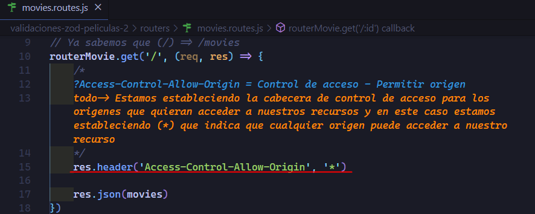
Si ahora recargamos de nuevo el entorno local que nos daba servor podemos ver que ya podemos acceder a los recursos.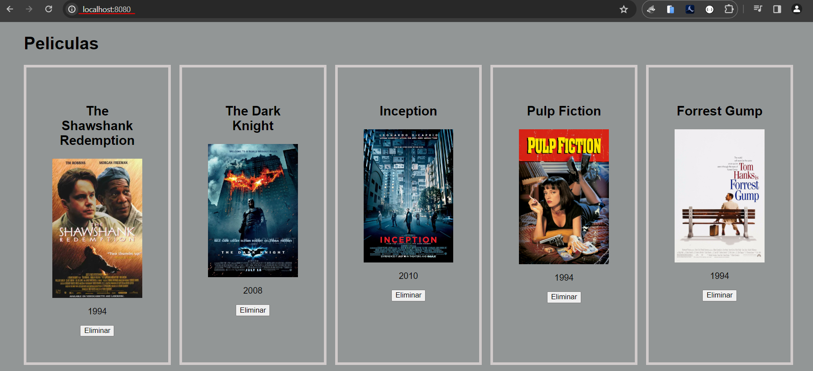
El agregar la cabecera Access-Control-Allow-Origin: * es lo más común que se hace para solucionar el error de CORS, pero como ya explicamos en la teoría el agregar (*) indica que le estamos dando permiso a todos los origenes para que puedan acceder a nuestro recursos y puede que no siempre queramos que cualquiera pueda acceder.
Específicar nuestros propios origenes → Access-Control-Allow-Origin: origen específico.
Como ya sabemos nosotros podemos específicar un origen en concreto, por ejemplo, el origen del cual nos brinda servor → http://localhost:8080
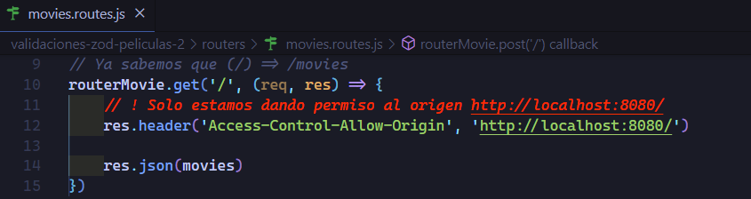
Lo que acabamos de hacer tambien solucionaria el error, ya que le estamos específicando el origen que nos da servor.
Como podemos ver tambien soluciona el error
Pero el problema es que no siempre sabemos el dominio que querrá acceder a nuestros recursos, no solo el dominio es importante sino que tambien el puerto es importante, ya que si cambiamos el puerto en lugar de 8080 que es el que nos da servor a 8081 el puerto ya es diferente y por ende ya no coincidira con el origen que está accediendo a nuestros recursos.
Hemos cambiado el puerto del origen que le estamos dando permiso a 8081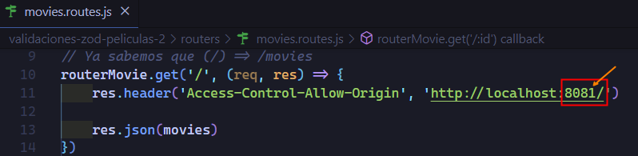
Como podemos de nuevo ya obtenemos el error y no podemos ver nada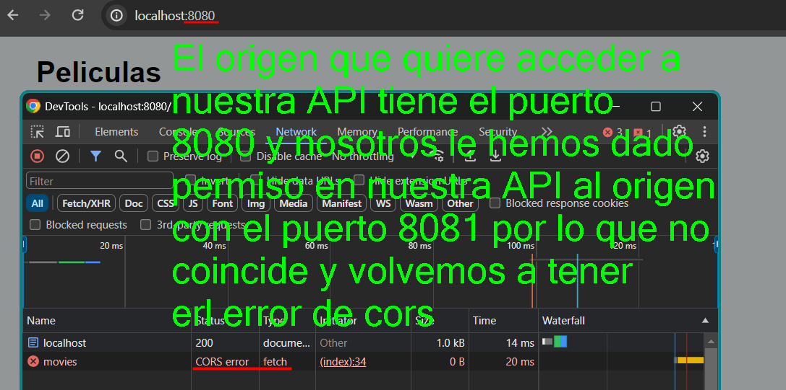
Entonces algo que suele hacer es crear un array con los origenes que ya sabemos que pediran recursos a nuestra API.
Tambien necesitamos acceder a la cabecera origin que nos envía la petición req.header('origin').
La cabecera req.header('origin') NO LA ENVIA EL NAVEGADOR CUANDO LA PETICIÓN ES DEL MISMO ORIGEN.
Es decir que no podemos obtener esta cabecera cuando el origen que quiere acceder a nuestros recursos es el mismo origen, sería algo ilógico.
Solo obtenemos la cabecera req.header('origin') cuando el origen que quiere acceder a nuestros recursos es diferente al de nuestro Servidor.
Esto no devolveria la cabecera origin ya que estamos haciendo una peticion del mismo origen
http://localhost:8080/ → http://localhost:8080/ = No devuelve cabecera origin
Esto si devuelve la cabecera origin ya que estamos haciendo una peticion de un origen diferente.
http://localhost:1234/ → http://localhost:8080/ = Si devuelve la cabecera origin.
Ahora si pasemos al código.
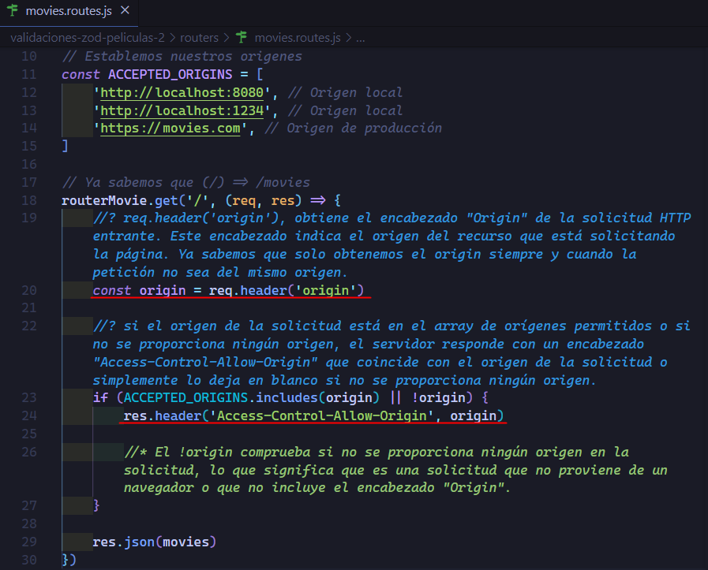
Veamos el código sin comentarios.
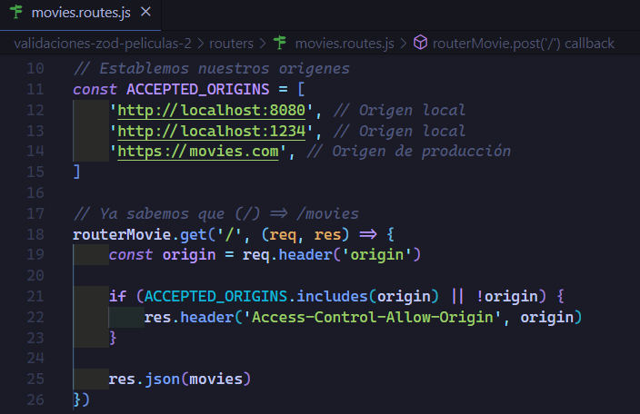
CORS pre-flight
Hasta aquí todo parece estar bien, pero hay algo importante por ver aún, y resulta que el error de cors actua dependiendo de los métodos que quieren acceder a nuestro servidor, para eso vamos a clasificar los métodos.
Métodos simples:
GET
HEAD
POST
Métodos complejos:
PUT
PATCH
DELETE
Ahora sabiendo esto, nuestra solución que tenemos hasta ahora, funciona bien porque se encuentra dentro de los métodos simples, pero cuando hacemos una solicitud con algún método complejo son consideradas "no simples" y desencadenan una solicitud pre-flight OPTIONS.
Pre-flight OPTIONS: Cuando el navegador detecta que una solicitud no es simple (es decir, que involucra un método no simple o ciertos encabezados personalizados), enviará primero una solicitud OPTIONS al servidor antes de la solicitud real.
Es como hacer una request previa, antés de que se ejecute la request original.
Esta solicitud OPTIONS incluye información sobre el método y los encabezados que se usarán en la solicitud real. El servidor debe responder a esta solicitud OPTIONS con los encabezados adecuados para permitir o denegar la solicitud real.
¿Qué son las OPTIONS?: Es un método de solicitud HTTP. Al igual que GET, POST, PUT, DELETE, etc., OPTIONS es un método específico que se utiliza para preguntar al servidor qué métodos y recursos son permitidos en el servidor. El navegador envía esta solicitud OPTIONS como parte del proceso de CORS pre-flight para obtener permisos antes de enviar la solicitud real.
Por lo tanto, cuando hablamos del error de CORS pre-flight, nos referimos a un problema que surge cuando el servidor no está configurado adecuadamente para responder a la solicitud OPTIONS, lo que provoca que el navegador bloquee la solicitud real debido a las políticas de seguridad de CORS.
En pocas palabras si no específicamos en nuestro backend las OPTIONS para solicitudes complejas, con PUT,PATCH,DELETE, obtendremos el error de CORS pre-flight
Lo que haremos ahora para poder ver este error, es crear la funcionalidad eliminar película en nuestro frontend.
Agregamos un escuchador en toda la pagina y cuando se de click al botón eliminar hacemos la petición con el método DELETE para proceder a eliminar la película.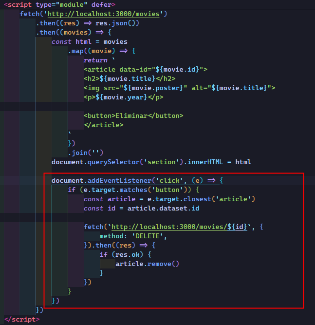
En nuestro archivo movies.routes.js agregamos la funcionalidad para eliminar.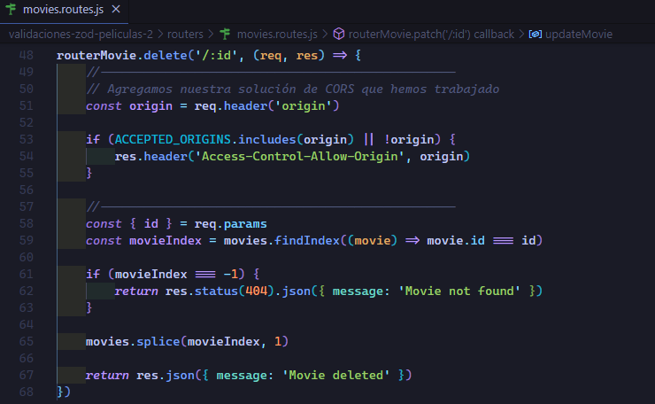
Queremos eliminar la película The Dark Knight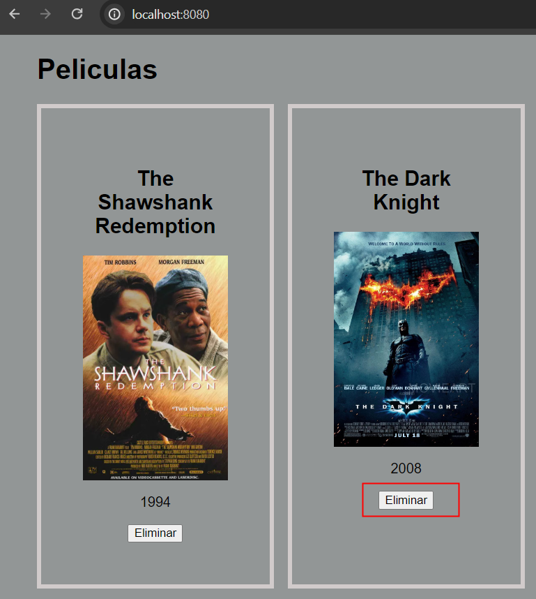
Como podemos observar apesar de tener la solución de CORS que habiamos estado trabajando, aun seguimos teniendo un error de CORS pero ahora es el error CORS pre-flight, que ya sabemos que es por no definir las OPTIONS cuando recibimos una request compleja como PUT, PATCH, DELETE.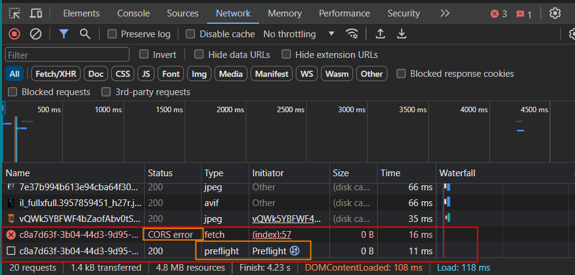
Solución de CORS pre-flight
Para poder solucionar el CORS pre-flight tenemos que específicar las OPTIONS, y ya sabemos que OPTIONS es un método HTTP.
Como nuestra aplicación está enrutada, el lugar donde especifiquemos nuestras OPTIONS, no es tán importante ya que express las maneja en el orden correcto.
Nosotros hemos decidio especificarlas hasta el final de los endpoints, pero daria igual si las pusieramos al incio de los endpoints.
Especificación de las OPTIONS al final del archivo movies.routes.js.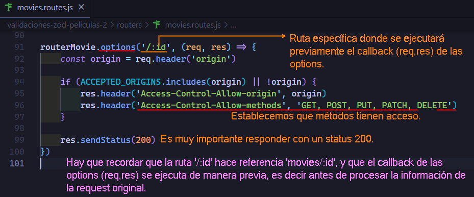
Ahora si, si intenamos eliminar la película The Dark Knight, ya podriamos eliminarla, ya que ahora sí hemos especificado las OPTIONS diciendole que métodos tienen nuestro permiso.
Damos click a eliminar The Dark KnightComo podemos ver ya está eliminada y en su lugar aparece la película Inception.
Solución de CORS con módulo cors
Otra manera de solucionar el error de CORS incluyendo el Cors pre-flight, es utilizando un middleware del módulo cors.
El comando para instalar el módulo cors es el siguiente:
npm i cors -E
Una vez instalado procedemos a utilizar el middleware, y como nuestra app está enrutada los midlewares los ocupamos en el archivo app.js
Uso middleware cors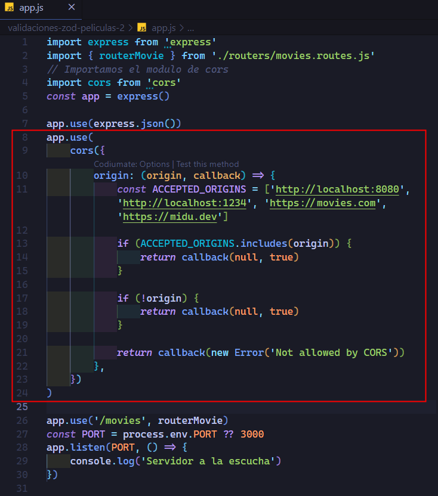
A continuación la explicación del código.
origin: Es una función que se llama para determinar si el origen de la solicitud (origin) es permitido o no. Toma dos argumentos: origin y callback. origin es el origen de la solicitud HTTP (el valor del encabezado Origin). callback es una función que debes llamar con dos argumentos: el primero es un error si ocurre, o null si no hay error, y el segundo es un booleano que indica si el origen es permitido (true) o no (false).
La función primero verifica si el origen está incluido en la lista de orígenes aceptados (ACCEPTED_ORIGINS). Si es así, llama a callback(null, true) para indicar que el origen es permitido.
Luego, verifica si el origen es nulo (!origin). Esto puede suceder si la solicitud no incluye un encabezado Origin. Si es nulo, también permite la solicitud llamando a callback(null, true).
Si el origen no está en la lista de orígenes aceptados y no es nulo, llama a callback(new Error('Not allowed by CORS')) para indicar que el origen no está permitido.
En resumen, este código está configurando el middleware CORS para permitir solicitudes solo desde ciertos orígenes específicos (ACCEPTED_ORIGINS). Si el origen de la solicitud está en la lista de orígenes aceptados o si el origen es nulo, la solicitud se permite. De lo contrario, se devuelve un error indicando que el origen no está permitido.